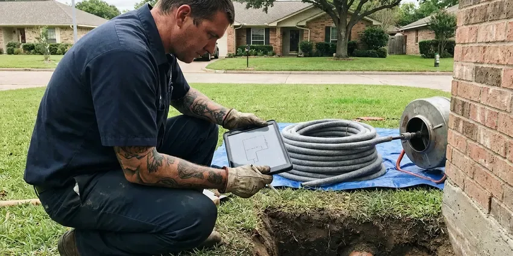

Slab Leak Repair in Castro Valley, CA
Slab leaks in Castro Valley, CA waste water around the clock. FBL Plumbing isolates the line and repairs or reroutes it.
- Same-Day Slab Leak Detection
- Hot and Cold Line Testing
- Quick Leak Locating
- Post-Tension Slab Safe

Get Your Slab Leak Located in Castro Valley, CA
Every day it runs, more soil gets wet. Schedule a locating visit.
Slab Leak Repair in Castro Valley, CA With Pinpoint Detection
FBL Plumbing technicians in Castro Valley, CA fix pinholes in copper, split PEX and the loose fittings in between. No two get the same fix. Copper might get a new section of Type L with sweated joints, while PEX usually gets a new expansion or crimp fitting, and either way the line gets pressure tested before the hole is closed.
Our expertise includes:
- Hot and cold line isolation tests
- Hot and cold line reroutes through attics in PEX-A
- Careful concrete cutting and patching

Additional Plumbing Repair Services in Castro Valley, CA
We offer expert plumbing repair services across Castro Valley, CA to fix leaks, restore flow, and keep your system running smoothly.


Customers
Why Choose FBL Plumbing for Slab Leak Repair in Castro Valley, CA?
A slab leak repair done in the wrong spot means a second hole. Our plumbers carry the locating gear and test rigs on every truck, which means we mark the leak before any cutting.
- Under-Floor Accuracy, We locate leaks closely, which keeps flooring damage to a minimum.
- Reroute Experts, We reroute through the attic when repairing under the slab is not the best choice.
- Pinpoint Locating, Acoustic and thermal equipment finds the break under your floor, so there is no exploratory digging.
Citywide Coverage
We provide slab leak repair throughout Castro Valley, including the many homes built slab-on-grade. We can often locate the same day. Simple, accessible leaks are often fixed on that visit, and bigger jobs like reroutes get the next open slot.
Experienced Team
Leak specialists on our crew have years with acoustic detection, thermal imaging and line tracing. They know the difference. They can tell a slab leak from a wall leak or a bad toilet seal before anyone cuts the floor.
Safety-First Approach
We shore and backfill properly on every job. Floors get protected. Tunnels get shored as they are dug, trenches get compacted in layers, and the work area is swept and secured before we leave, so nothing settles or cracks after the patch cures.
Trusted Certified Castro Valley Plumbing Services Professionals
At FBL Plumbing, we are proud to offer certified plumbing services throughout Castro Valley, CA. Credentials matter in this trade. Every repair, install and maintenance visit follows strict safety and quality rules, and the plumbers doing the work carry recognized industry credentials.
Call Us Now PHCC Plumbing Contractor Recognition
PHCC Plumbing Contractor Recognition Better Business Bureau (BBB) Accreditation
Better Business Bureau (BBB) Accreditation Angi Certified Pro
Angi Certified Pro ISO 9001 Quality Management Certification
ISO 9001 Quality Management CertificationSlab Leak Repair Options in Castro Valley, CA
Cold Water Slab Leak Repair in Castro Valley
Cold leaks don't make warm spots. Watch the bill instead. They show up as a higher bill, a meter that turns with every faucet off, or a patch of carpet that stays damp, and they soak the soil just as much as hot leaks do. Your Castro Valley home is no exception. We isolate the cold line and fix it or run a new one.

Sewer Line Slab Leak Repair in Castro Valley, CA
Drain lines under the slab leak too. You'll often notice an odor. A camera inspection shows the crack, sag or roots, and the repair might be a tunnel, a slab cut or a liner, depending on location and length. Health codes in Castro Valley, CA cover this work.
Slab Leaks in Stores and Offices in Castro Valley
Retail stores, offices and restaurants on slabs develop the same leaks as houses. Tenants notice right away. Leaks get found and fixed around business hours, usually after closing, and you get a written report with photos for managers and insurers.
Slab Leak Repair Cost Comparison in Castro Valley, CA
A spot repair costs least up front. Then add the flooring. Reroutes cost somewhat more but skip the concrete work and prevent future leaks in that line, and a whole-house repipe makes sense once you have had several slab leaks or have old copper throughout. You get clear prices for each.
Slab Leak Reroute in Castro Valley
Older copper under a slab tends to leak again. Rerouting ends that. We leave the leaking run in the ground and pull new PEX through the attic and down the walls, cutting openings where they are easiest to patch, often behind a vanity or in a closet.
Thermal and Acoustic Tools in Castro Valley
A thermal camera shows the warm streak a hot water leak leaves on the floor. Cold leaks need the mic. For those, an acoustic sensor listens through the concrete for the sound of water escaping, and we mark the spot where it peaks, whether the house is an older ranch or a newer two-story. Both tools ride on every Castro Valley truck.
Commercial Slab Leak Repair in Castro Valley, CA
Commercial slabs in Castro Valley carry longer pipe runs and more branches. It means more line to test. We isolate branches one at a time, locate the leak and schedule cutting for after hours or a weekend, so your doors stay open and your customers never see a saw. Work meets Northern California code and stays safe and compliant.

After-Hours Slab Leak Calls in Castro Valley
A main line splitting under the slab can lift tile and soak drywall fast. Don't wait until morning. The crew caps the broken line, restores water elsewhere and begins repairs right away, keeping soil and flooring damage down. We cover all of Castro Valley.
Slab Leak Plumbers Near You in Castro Valley, CA
Need slab leak repair near me in Castro Valley, CA? FBL Plumbing responds fast to limit water damage. The sooner the line is isolated, the less soil gets soaked, and the less likely you are to see cracked tile or a door that starts to stick. Calling early saves money.
People who search slab leak repair near me usually have a warm floor, a high bill or the sound of running water. We bring the equipment. We test the lines, find the leak and explain each repair option with a written price before we leave, so you can decide that day or take a night to think.
FBL Plumbing at a Glance
- Fully licensed plumbing team covering Castro Valley, CA
- 24/7 emergency service with same-day scheduling
- Upfront, flat-rate pricing before work begins
- 4.8-star rated by 834+ Northern California customers
Castro Valley Map
Castro Valley Information
- Population
- 66,441
- Area codes
- 510/925/650
- Service area
- Castro Valley and towns within a 40 mile drive
- Nearby
- San Leandro, Hayward, Union City, San Ramon
Copper became standard in many mid-century homes here, and decades later pinhole leaks and corroded fittings are a common repair call. With supply lines buried under concrete, hot water, minerals and soil shifts make slab leaks one of the most frequent repairs we do in Castro Valley, CA.
Expert Services
Reach out to FBL Plumbing for reliable plumbing work done by licensed pros in Castro Valley, CA.
Our Specialized Plumbing Services in Castro Valley, CA
At FBL Plumbing, you get every kind of plumbing service from one company across Castro Valley, CA. We go from leak detection all the way to full system installations, for homes and commercial buildings, and we do it quickly at a fair price. Take a look at our core services below:


What Happens on a Slab Leak Call in Castro Valley, CA
We test, locate, quote and repair, in that order, every time.
Call for a Visit
Call FBL Plumbing at (669) 319-2034 and describe what you are seeing. We book a licensed plumber to visit your Castro Valley property.
Locate the Leak
The tech isolates hot and cold, then uses acoustic and thermal gear to mark the leak before cutting anything.
Repair and Patch
Depending on where the leak is, we do a spot repair, a reroute or a repipe, then patch the opening.
Frequently Asked Questions About Slab Leak Repair in Castro Valley
A simple, easy-to-reach repair can be around $500. Complex jobs cost more. Long reroutes and full repipes can go past $5,000, depending on where the leak is, what pipe you have and how much flooring or drywall has to be restored. That range holds in Castro Valley. We price it after locating.
Yes. A steady leak erodes the soil beneath the slab and leaves voids that let it sink. Expansive clay soils are common across Northern California, and seasonal swelling and shrinking can shift slabs and buried sewer laterals.
For PEX, we use Uponor and Viega. Copper is Type L. Where possible, we match your existing fitting system so the repair ties in cleanly and future work uses the same parts. Most Castro Valley homes have one of the two.
Water bills that jump for no reason are often first. Then warm spots on tile. You may also hear water with every fixture off, see stains or mildew on baseboards, or notice a crack in the slab that keeps getting longer. Any of these in a Castro Valley home is worth a test.
Probably not without the right gear. Locating is the hard part. Without listening equipment and a test rig, you are guessing where to cut, and a wrong cut or weak joint can cost more than the original repair would have. A licensed plumber from FBL Plumbing is the better bet.
Yes, because water wicking into carpet pad, flooring and the bottom of drywall feeds mold quickly. Repairing the leak quickly and drying the area helps prevent it.
Policies vary, but many cover damage from a sudden slab leak. Pipe repair may be excluded. Coverage often goes to access and resulting damage, so call your insurer quickly, and we can provide photos and a report.
This is not a weekend project. You need specialized gear. A wrong guess on location means cutting the slab twice, and a poor joint under concrete can fail, soak the soil and break plumbing code. In Castro Valley it may also void a home warranty.
What Our Customers Say About Our Plumbing Experts

Emily R.
The shutoff valve under our kitchen sink snapped off in my hand on a Sunday morning. FBL Plumbing had someone out by early afternoon. He replaced both angle stops with quarter turn valves and showed me where our main shutoff was, which I honestly did not know.
Plumbing Repair · Union City, CA
Daniel K.
A pipe burst in the garage ceiling at 11 at night. Someone answered on the second ring, and the plumber was in my driveway about fifty minutes later. He shut off the main, cut out the split section, and had water back on before 2 am.
Emergency Plumbing · Oakland, CA
James P.
Our restaurant had a slow leak at the hand sink that was rotting the cabinet base. FBL Plumbing came in at six in the morning before prep, replaced the trap and both supply lines, and was packed up before my first cook clocked in.
Commercial Plumbing · Castro Valley, CACarlos V.
Our house still had galvanized pipe, and upstairs the shower was a trickle. The crew repiped everything in PEX over three days and patched every drywall hole before they left. The pressure difference is night and day.
Repiping · Union City, CALisa C.
Water was pouring out from under the washing machine on a holiday weekend. FBL Plumbing talked me through closing the valves over the phone and had a plumber at the house within ninety minutes. It was a burst fill hose.
Emergency Plumbing · San Ramon, CA
Monica A.
Our water bill nearly doubled in one month with no change in how we used water. The tech checked the meter, heard the leak under the hallway with his equipment, and opened a hole about a foot square. Fixed the same day.
Slab Leak Repair · Dublin, CA